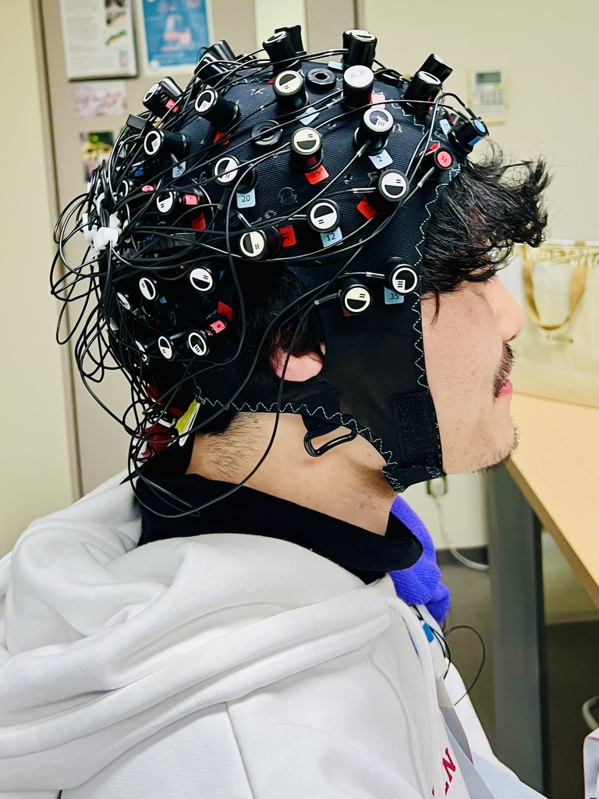
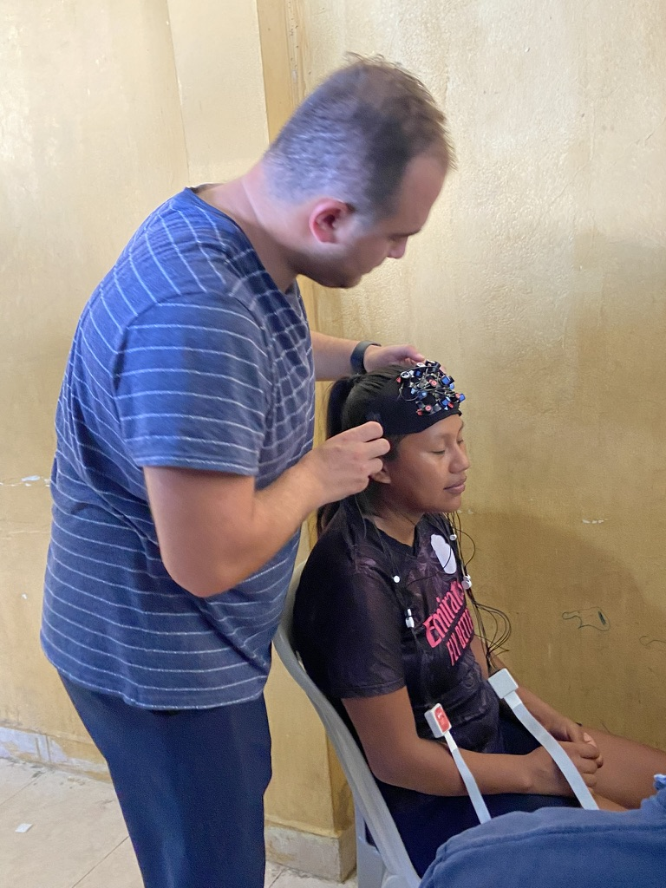

What we study
Every project in the lab comes back to one idea: language is learned and used between people. We use fNIRS because it lets us record the brain while people actually interact — talking, listening, learning together — instead of lying still in a scanner.
Social interaction and language learning
We compare people who learn new vocabulary alone with people who learn it with a partner, and then look at what their brains do when they recall it. The social condition changes both memory and neural response. This line of work also looks at emotion words in bilinguals — whether a second language carries the same emotional weight in the brain as the first.
Hyperscanning and neural coupling
At live storytelling events we record a storyteller and four listeners simultaneously and measure how their brain activity aligns over the course of a story. The question is whether that neural coupling tracks the sense of belonging people report afterward — and whether storytelling could be a real intervention for connection on campus.
Emotion, stress, and assessment
In an intensive English program, we ask whether students who feel socially connected to their classmates process language differently. A related project tests whether short relaxation activities before an exam change neural activation and, with it, test performance.
Ideophones and multisensory meaning
Ideophones — sound-symbolic words like the Japanese kirakira or the Kichwa words for the way water moves — carry sensory meaning that ordinary words don't. We've recorded fNIRS responses to these words in Japan, Hong Kong, and the Ecuadorian Amazon, including the first neuroimaging data collected from Pastaza Kichwa speakers.
Why fNIRS?
Functional near-infrared spectroscopy shines near-infrared light through the scalp and measures how much comes back. Oxygenated and deoxygenated blood absorb that light differently, so changes in the returning signal tell us where the cortex is working harder.
It won't see deep structures the way fMRI does. What it gives us instead is what our questions need: participants can sit up, talk, gesture, and look at each other. Several people can be recorded at once. The equipment fits in a backpack and runs on a battery, which is how it ended up in a village in the Amazon.
Our systems are NIRx NIRSport2 units. Analysis runs in MATLAB, Python, and R, with our own pipelines for hyperscanning and interpersonal synchrony. Technical details are on the researchers page.
Where the work has gone
Provo classrooms and storytelling events · Nagoya and Tokyo · the University of Hong Kong · Pastaza province, Ecuador · Lima and Cusco, Peru.
Read the papersFrom the lab to the field



